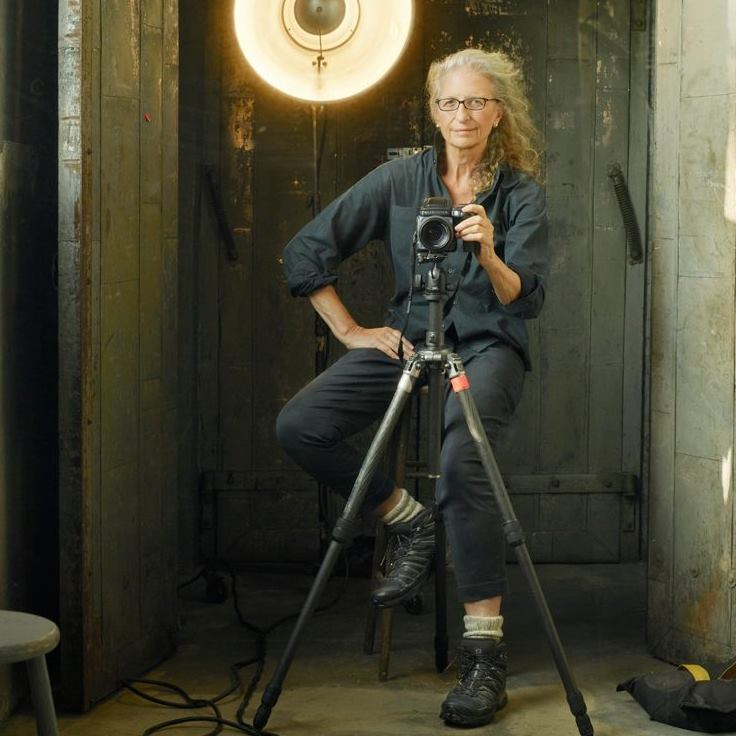
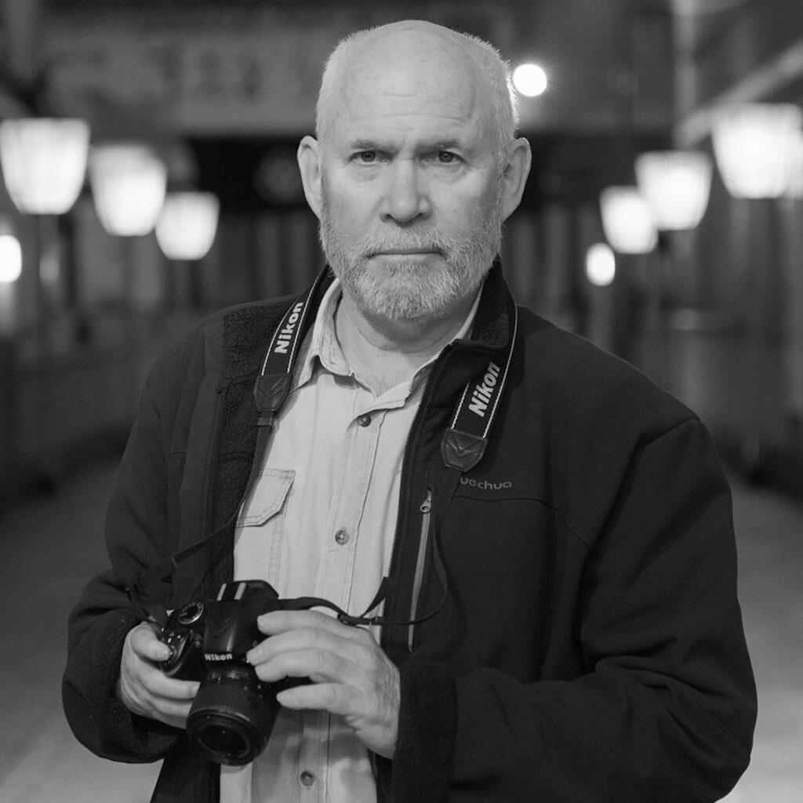
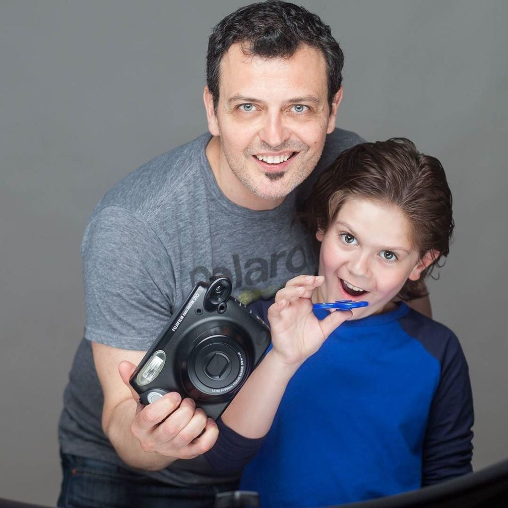
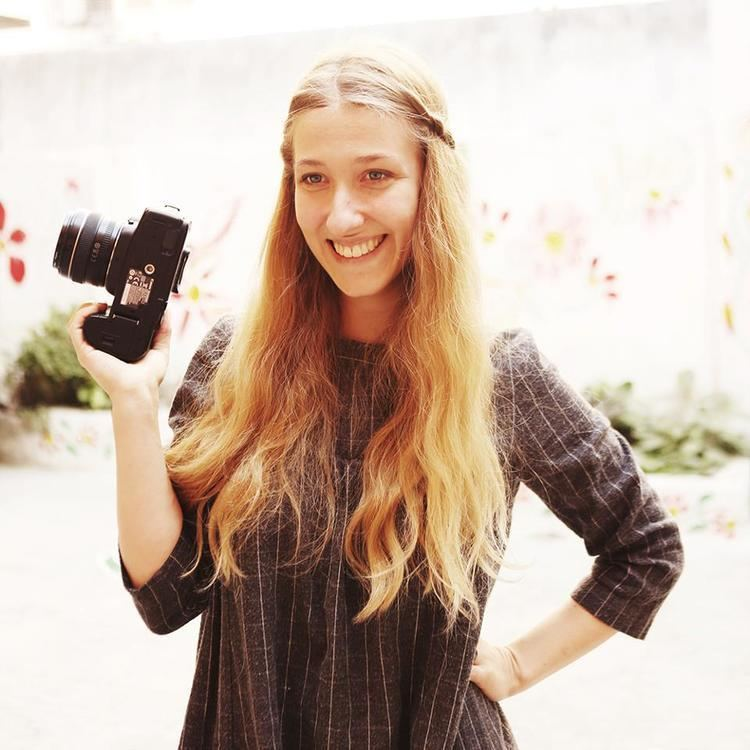

Ionic Successful Photographers
"Inspirational Stories"
Taking iconic photography goes beyond just using a camera to capture a moment. A professional photographer is in the business of using cameras to take pictures which are developed into prints or prepared as digital photos. Photographers know how to use cameras, take advantage of lighting, use lighting equipment, work with their subjects or objects to make them look good and edit their work to enhance its beauty or a certain perspective of the photo.
Annie Leibovitz
Anna-Lou Leibovitz was born in Connecticut in 1949 as the third child of six children to parents with Eastern European and Jewish decent. Annie,
as she grew up being called, got her passion for art from her mother who was a modern dance instructor. Her family moved around a lot when she was
a child because her father was a lieutenant colonel in the US Air Force. Her family credits her success as a photographer to their numerous moves
since she grew up seeing the world from the windows of a car.
Leibovitz created iconic images featuring influential musicians of the era like Elton John and Bob Dylan. However, despite her success, Leibovitz’s
work at Rolling Stones was jeopardized by her hard partying and excessive drug use. It was after her rehabilitation that she was approached by Vanity
Fair, a much more mainstream magazine.
Success tip 1: Pursue your dreams
Steve McCurry

Internationally known for his photograph, the Afghan Girl which was featured on the covers of National Geographic in 1984, McCurry was born in the
suburb of Philadelphia and studied Film-making and Cinematography at Penn State University. He got a degree in theater arts before he shifted to photography.
After some years of freelance work like genuine essay writing service, McCurry made a decision to explore India with a bag of clothes, some film rolls and his
camera.
McCurry emerged from the Afghanistan war with rolls of film sewn into his clothes, showing and reporting the conflict of the rebel-controlled Afghanistan before
the Russian invasion. After winning the Robert Capa Gold Medal for best Photographic reporting from Abroad for those pictures, he went on to win many other awards
for his photographs covering international and civil conflicts in the Philippines, the Gulf War, the former Yugoslavia and many other places. He is best known for
his evocative color photography.
Success tip 2:You can’t become great sitting in your comfort zone.
Don McCullin

Don McCullin is a British photojournalist born 9 October, 1935. Born at Finsbury Park, a poor part of London, McCullin had to leave school at fifteen with
no qualifications. He eventually signed up as a photographic assistant for National Service in the RAF. His first published photograph was of The Guvnors, a
London Gang which had been involved in a murder. The image appeared in “The Observer” that same year.
McCullin used his photos to project the realities of war, with sympathy to the victims of the war such as the poor, dispossessed and ordinary soldiers suffering
on both sides. He risked his life many times to take his photographs. He is recognized and has been awarded for his war photographs and images of urban strife.
Jane who wrote the domywriting review is a big fan of Don McCullin.
Success tip 3:No matter your background, your future is in your hands.
Guido Venitucci
Guido Venitucci was born in Rome, Italy where he studied drama. He came to the United States in 1994 with no money, no contacts and no knowledge of English
language and worked for many years in the theater as an actor, director, acting coach and sommelier while practicing photography as a hobby.
Before moving to
United States, Venitucci has a role in a popular Italian TV series in 1990 which won some awards. It was on the set of this TV series that Venitucci discovered
his love for photography.
He honed his craft, taking photos of his fellow actors and workers on set. And this self-taught photographer has become recognized for his portraits and commercial
work in the health and beauty industry.
Success tip 4:You can develop yourself; you just need to be determined enough to get what you want.
Brooke Shaden
Brooke Shaden was born in March, 1987 in Lancaster, USA. She graduated from Temple with a bachelor of art in film and English and began her photography career
right after. She started creating self-portraits to maintain control over images and she grew into a self-portrait artist. Shaden uses her self-portraiture to place
herself within worlds she wishes to live in.She works to create new worlds with her photographs. She is also another self-taught photographer. Her passion is
story-telling and she lives a life embroiled in it with her self-portraits, international adventures and motivational speech. She is a photographer who refused
to settle for convention and pursued her passion and curiosity.
At 24, she was the youngest artist in the “Digital Darkroom” exhibit at the Annenberg Space for Photography, an exhibit of the work of 17 artists that explored the
intersection of art and technology.She has been a guest instructor on the CreativeLIVE website.In January 2014 CreativeLIVE created "The Brooke Shaden Contest"
where contestants enter their photo portfolios and answer an essay question to compete for a spot in her 'Master Your Craft' photography workshop in addition to a half
day shooting on location with her, rental photo gear from LensProToGo (up to $10K), airfare to Seattle ($500), and three nights stay in Seattle ($264).Shaden is the
co-host of The Framed Network's series "The Concept" (a series of shows on YouTube) with fashion photographer Lindsay Adler and hosted her own feature episode "The Brooke
Shaden Challenge".She is the author of Inspiration in Photography: Training your mind to make great art a habit published in 2013 by Focal Press.
Success tip 5:You don’t have to do what everyone else is doing, you can do something new.